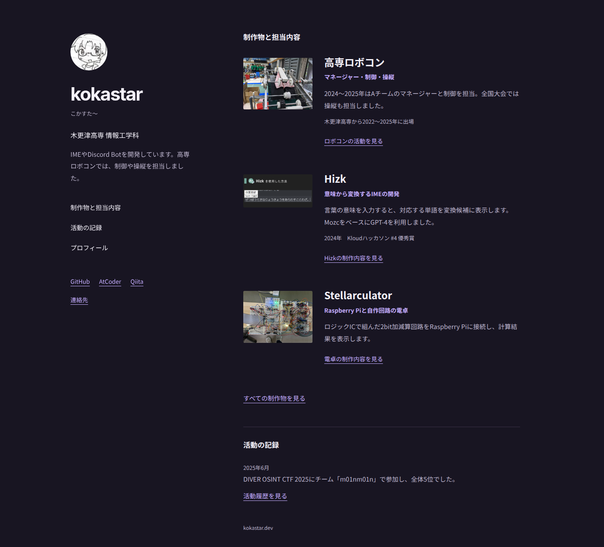

Aプロフィールを左に置く
人物と制作物を、並べて読む。

本人紹介（左に固定）│制作物と担当 外部プロフィール │小写真＋説明 ページ内の目次 │活動の記録
写真の役割 作品を見分ける補助。
向いている用途 担当内容を読み比べる。本人の情報やGitHubへすぐ移動する。
弱点：作品画像の迫力は控えめ。モバイルではプロフィールが先に入る。
kokastar.dev ／ トップページの構成検討
本人の紹介、制作物、担当内容の順序を変えた簡易モックです。既存ページには適用していません。
参考：Brittany Chiang。PCで本人情報を左に残す配置をA案に取り入れました。B・C案は、写真と記録を軸にした別の構成です。
モック内をスクロールできます。リンクは既存サイトへ移動します。
文章は既存のプロフィール・制作物・活動履歴データに基づきます。ロボコンでは確認できる担当を明記し、それ以外の作品で細かな担当分担を推測していません。写真の撮影年や機体の受賞は断定していません。
A・Bは同じ3作品を、Cは年が確認できる3件を抜粋しています。Cの画像に添えた年は活動の年であり、撮影年ではありません。簡易モックのためテーマ切替や動的データ連携は含めていません。